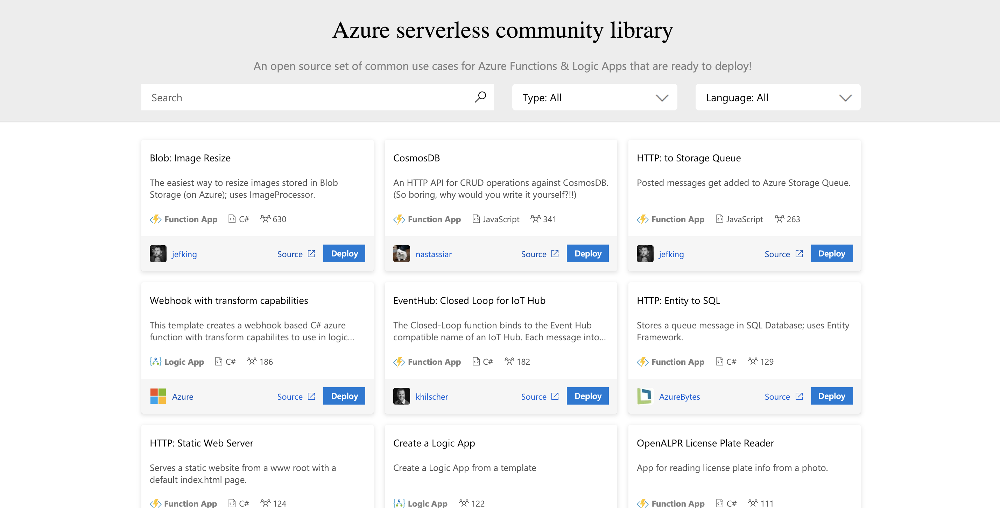

class: center, middle # Connect Update 2018 Yuki Hattori - Azure AppDev TSP --- class: middle # AI +機械学習 - Azure Machine Learning service の提供開始 - Text Translator のカスタム翻訳機能 - オープンソースONNXランタイム - テキストトランスレータのカスタム翻訳機能 - Language Understanding コンテナー サポート: プレビュー --- ###[Azure Machine Learning service の提供開始](https://azure.microsoft.com/ja-jp/updates/azure-machine-learning-service-now-generally-available/) 開発者とデータ サイエンティストが機械学習モデルをすばやく容易に構築、トレーニング、およびデプロイできるようにするクラウド サービスである、Azure Machine Learning service が一般公開されました。 Azure Machine Learning service を使用すると、以下のことが可能です。 * 自動機械学習を使用してモデルを短時間で構築する。 * お好みのオープン ソース フレームワークを使用して、任意の Python 環境から、自動構成クラウド コンピューティングによってモデルをトレーニングする。 * 機械学習用の DevOps を使用してエンド ツー エンドのワークフローを管理し、クラウドとエッジへの容易なデプロイを実現する。 --- ### [Text Translator のカスタム翻訳機能](https://azure.microsoft.com/ja-jp/updates/custom-translation-capability-of-text-translator-is-now-available/) Translator Text Cognitive Service のカスタム翻訳機能が一般公開されました。カスタム翻訳機能をご利用いただくことで、人間が翻訳したコンテンツを使用し、特定の文章スタイルや業界固有の表現、ボキャブラリに従来よりも適切に対応できるカスタム翻訳システムを構築できます。 カスタム翻訳の一般利用料金は、通常の翻訳料金の 4 倍で、2019 年 2 月 1 日から開始されます。 ##### Custom Translatorとは 翻訳会社、アプリ開発者、および言語サービス プロバイダーがカスタマイズされたニューラル機械翻訳 (NMT) システムを構築できるようにする Microsoft Translator サービスの一機能です。 カスタマイズされた翻訳システムは、既存のアプリケーション、ワークフロー、および Web サイトにシームレスに統合されます。 Custom Translator は、統計的機械翻訳 (SMT) に対して Microsoft Translator Hub が提供するのと同様の機能を提供しますが、ニューラル機械翻訳 (NMT) システム専用です。 --- ### [オープンソースONNXランタイム](https://azure.microsoft.com/ja-jp/updates/open-sourcing-onnx-runtime/) Open Neural Network Exchange (ONNX) 形式における機械学習モデルの高性能な推論エンジンである ONNX ランタイムがオープンソース化しました。ONNX ランタイムは ONNX バージョン 1.2 と互換性があり、CPU と GPU 双方の推論をサポートする Python パッケージに同梱されます。オープンソースの ONNX ランタイム プロジェクトのリリースにより、開発者は ONNX 推論エンジンをカスタマイズし、ソースコードから直接既存のインフラストラクチャに直接組み込むことが可能になります。また、多様なオペレーティング システム上でコンパイルおよび構築ができます。 ##### ONNX (Open Neural Network Exchange) とは Microsoft が共同開発した AI エコシステムにおける、相互運用性と革新のためのオープンソースのモデル記述 (= representation) です。ONNX フォーマットは AI を総ての人に対してより利用しやすく価値あるものにするオープン・エコシステムの基礎となります : 開発者は彼らのタスクのために適切なフレームワークを選択することができ、フレームワーク作成者は革新的な拡張に集中することができ、そしてハードウェアベンダーは最適化を効率化できます。 --- ### [Language Understanding コンテナー サポート: プレビュー ](https://azure.microsoft.com/ja-jp/updates/container-support-for-language-understanding-is-in-preview/) 本日、Language Understanding コンテナー サポート のプレビュー版の提供を発表いたします。この機能をご利用いただくことで、エッジ、オンプレミス、クラウドに言語理解ソリューションをデプロイすることができます。Cognitive Services のコンテナー サポートにより、お客様はエッジで AI を実行し、クラウドとエッジをまたぐ一貫したアプリケーション アーキテクチャを構築することができます。 **エッジで AI を実行する** : さまざまな組織で生成されるデータ量がかつてなく増加している今、お客様は、多様な環境で AI 機能をデプロイするための柔軟性を必要としています。コンテナーで Cognitive Services をデプロイすると、お客様はデータが保持されている物理世界の近くで情報を解析し、応答性に優れたコンテキスト対応型のリアルタイム分析情報や現実的なエクスペリエンスが得られます。 **クラウドとエッジで整合性のあるアプリ アーキテクチャをビルドする** : Cognitive Services コンテナーを使用すると、堅牢なクラウド機能とエッジのローカリティの両方を活用するよう最適化された単一のアプリケーション アーキテクチャをビルドできます。コンテナーを使用すると、ソリューションにデプロイ済みの AI モデルの新しいバージョンにご自分のペースでアップグレードすることができます。また、エッジとクラウドのどちらで実行される場合も、新しいモデル バージョンを運用環境にデプロイする前に、整合性のある方法でテストできます。 yuhattor コメント: コンテナイメージはモデルが入っており、結構重いです。 --- class: middle # Compute - 提供開始: Service Fabric Mesh Fall 更新プログラム - Durable Function の JavaScript サポートが利用可能です - Azure Functions における Python のサポートはプレビュー段階です - Azure Kubernetes Service - 提供開始: Azure Service Fabric ランタイム バージョン 6.4 & SDK の更新プログラム - Bosh の使用によるオンプレミスの Service Fabric Ubuntu クラスターのデプロイ - Azure Container Instances - サーバーレスコミュニティライブラリ - Azure Functions、Linux 向け従量課金プラン - パブリック プレビュー --- ### [提供開始: Service Fabric Mesh Fall 更新プログラム](https://azure.microsoft.com/ja-jp/updates/in-development-azure-service-fabric-mesh-fall-2018-refresh/) たとえば、次のような拡張機能が含まれています。 - ステートレス インスタンスの自動スケール。 - シークレット、ネットワーク、ゲートウェイ、ボリュームのリソースのサポート。 - インライン シークレットのサポート。 - 複数のイングレスおよびルーティングのサポート。 - Azure Files と Service Fabric のリライアブル ボリュームをコンテナーにマウントするためのサポート。 --- ### [Durable Function の JavaScript サポートが利用可能です](https://azure.microsoft.com/ja-jp/updates/javascript-support-for-durable-functions-is-now-available/) 本番のワークロードに使用される一般的な可用性 (GA) での JavaScript をサポートする Azure Functions ランタイムへの Durable Functions 拡張機能を用いて、サーバーレスなワークフローをプログラム的に調整します。JSON スキーマやビジュアル デザイナーを使用する代わりにコードでワークフローを定義する Durable Functions を使用することで、サーバーレスなアプリケーションにおける複雑でステートフルな調整問題を簡素化します。このリリースでは、いくつかの開発パターン (機能連鎖、ファンアウトまたはファンイン、または人的な介入など) に続き、Node.js や JavaScript の開発者が新たなシナリオを利用できるようになりました。 --- ### [Azure Functions における Python のサポートはプレビュー段階です ](https://azure.microsoft.com/ja-jp/updates/azure-functions-python-support-public-preview-2/) Azure Functions では、Functions ランタイム 2.0 (クロス プラットフォーム) で Python 3.6 を使用した Python 開発をサポートするようになりました。Functions CLI や VS Code などのローカル ツールを使用してエンドツーエンドの開発作業 (ビルド、デバッグ/テスト、公開) を行いながら、Python コードと依存関係を Linux ベースの Functions で使用したり、Docker コンテナーのビルド/公開を行ってください。 --- ### [Azure Kubernetes Service (AKS) 仮想ノードはプレビューの段階です ](https://azure.microsoft.com/ja-jp/updates/aks-virtual-node-public-preview/) オープン ソースの Virtual Kubelet テクノロジーにより、Azure Kubernetes Service (AKS) 仮想ノードは開発者に対し、数秒で開始される追加のポッドを コンテナー インスタンス 内へ弾性的にプロビジョニングできるようにします。 Azure Portal を数回クリックをするだけで仮想ノード機能をオンにでき、追加のコンピューティング リソースを管理することなく AKS 環境でコンテナ中心のエクスペリエンスに関する柔軟性やポータビリティを得ることができます。さらに、Azure Container Instances コンテナーはおなじ仮想ネットワークを残りのクラスターと結合可能なため、仮想マシン (VM) および Azure Container Instances 上で動作するポッドをシームレスに渡す Kubernetes サービスを構築できます。 --- ### [提供開始: Azure Service Fabric ランタイム バージョン 6.4 & SDK の更新プログラム](https://azure.microsoft.com/ja-jp/updates/in-development-azure-service-fabric-runtime-version-6-4-sdk-updates/) 次のような拡張機能が含まれています。 - Windows Server バージョン 1803 のサポート - 自動バックアップおよび復元サービスの一般提供 - EventStore API の一般提供 --- ### [Bosh の使用によるオンプレミスの Service Fabric Ubuntu クラスターのデプロイ](https://azure.microsoft.com/ja-jp/updates/deploy-service-fabric-ubuntu-clusters-on-premises-using-bosh/) Bosh との Service Fabric の統合により、以下のことが可能になります。 - オンプレミス (VMWare) と 3 つの主要なパブリック クラウド (Azure、GCP、AWS) を含むあらゆる環境の Service Fabric に必要なインフラストラクチャを定義してデプロイする - 任意の環境で Service Fabric Ubuntu クラスターを定義してデプロイする - ダウンタイムなしで Service Fabric と OS のローリング アップグレードを実行する - インフラストラクチャの正常性を監視し、ダウンしている VM またはディスクがあれば、それをクラスターに再接続する Bosh とは VMWareが開発を行っているOSSの分散システム構成管理ツール。 分散システムの構成を一元管理 / サービスのバージョンも管理できる / CloudFoundryとかも構成可能 <img width="200px" src="https://cloudblogs.microsoft.com/uploads/prod/sites/37/2018/12/bosh.png"/> --- ### [Azure Container Instances (ACI) GPU サポートのパブリック プレビュー ](https://azure.microsoft.com/ja-jp/updates/azure-container-instances-aci-gpu-support-public-preview/) 開発者は、Azure Container Instances (ACI) を使用することで、サーバーを管理することなく Azure でコンテナーを簡単に実行できるようになります。 開発者はコンテナーを実行する VM の種類を選択できます。 ACI で GPU 対応のコンテナーがサポートされるようになり、開発者が機械学習に必要な集中的なジョブを実行できるようになったことをお知らせいたします。 チュートリアルは[こちら](https://docs.microsoft.com/ja-jp/azure/container-instances/container-instances-gpu) 追加の制限事項:GPU リソースは、コンテナー グループを仮想ネットワークにデプロイするときには使用できません。 --- ### [サーバーレスコミュニティライブラリ](https://azure.microsoft.com/ja-jp/updates/serverless-community-library-is-in-preview/) サーバーレス コミュニティ ライブラリは、Functions と Logic Apps を使用する一般的なユース ケースに基づいた、オープンソースの事前構築済みコンポーネント セットです。これらのコンポーネントは既に構築済みで、対象の Azure サブスクリプションにいつでもデプロイできます。このため、設定せずにプラグ アンド プレイで使用できるので、コーディングの時間が節約され、生産性が向上します。[利用可能な 40 以上のコンポーネント](https://serverlesslibrary.net/)をご確認ください。また、ご自身のコンポーネントを [GitHub リポジトリ](https://github.com/Azure/ServerlessLibrary)にコントリビュートしてください。  --- ### [Azure Functions、Linux 向け従量課金プラン - パブリック プレビュー](https://azure.microsoft.com/ja-jp/updates/azure-functions-consumption-plan-for-linux-preview/) Azure Functions で、Linux へのデプロイ向けの従量課金プランがサポートされるようになりました。これまでは、Linux へのデプロイは App Service プランで実行している間のみサポートされていました。この最新の機能強化により、実行ごとの支払いモデル (従量課金モード) を使用して Linux OS 上に組み込まれた Functions をデプロイできるようになるため、コード資産や事前に作成したコンテナーを Linux に持ち込んで Functions に使用したい開発者が、サーバーレスのアーキテクチャを使用できるようになります。 --- class: middle #データベース - パブリック プレビュー:Azure Database for MariaDB に対応した仮想ネットワーク サービス エンドポイント - Azure Database for MariaDB をご利用いただけます - Azure Cosmos DB .NET SDK バージョン 3.0 の概要 - Azure Cosmos DB の新たな共有データベース オファーがご利用いただけます - Azure SQL Data Warehouse Gen2 の下位 SKU - Azure Cosmos DBでのCORSのサポート --- ### [パブリック プレビュー:Azure Database for MariaDB に対応した仮想ネットワーク サービス エンドポイント](https://azure.microsoft.com/ja-jp/updates/public-preview-vnet-service-endpoints-for-azure-database-for-mariadb/) Azure Database for MariaDB に対応した仮想ネットワーク サービス エンドポイントが、このサービスを利用可能なすべてのリージョンでパブリック プレビューとなったことをお知らせします。 仮想ネットワーク サービス エンドポイントを使用して、仮想ネットワーク内のサブネットまたは一連のサブネットのみからの論理サーバーへの接続を分離します。仮想ネットワークから Azure Database for MariaDB へのトラフィックは、常に Azure のバックボーン ネットワーク内に留まります。この直接ルートは、仮想アプライアンスまたはオンプレミスを経由してインターネット トラフィックを受け取る特定のルートよりも優先されます。 サービス エンドポイント経由の仮想ネットワーク アクセスに対して別途課金されることはありません。 --- ### [Azure Database for MariaDB をご利用いただけます ](https://azure.microsoft.com/ja-jp/updates/general-availability-azure-database-for-mariadb/) Azure Database for MariaDB のサービスは、オープン ソースの互換性、組み込まれた高可用性と動的スケーリング、柔軟な価格設定といった特徴を有する、エンタープライズ対応のフル マネージド コミュニティ MariaDB を提供します。 MariaDB Community Edition を利用すると、リフト アンド シフト方式でクラウドに移行し、お好みの言語とフレームワークを使用することができます。お客様のワークロード需要に合わせてスケール可能なコンピューティングおよびストレージ リソースを提供する Basic、General Purpose、または Memory Optimized の価格帯で、馴染み深いツール、言語、およびフレームワークを使用した MariaDB サーバーを作成いただけます。 --- ### [Azure Cosmos DB .NET SDK バージョン 3.0 の概要](https://azure.microsoft.com/ja-jp/updates/version-3-0-of-the-azure-cosmos-db-net-sdk-in-preview/) Azure Cosmos DB .NET SDKは、開発者がSQL APIを使用してAzure Cosmos DBアプリケーションを構築し、さまざまな操作をより簡単に実行するのに役立ちます。バージョン3.0のプレビューがダウンロードできるようになったか、またはGitHubに関するフィードバックを提供します。SDKは.NET Standard 2.0をターゲットとしており、直感的な新しいオブジェクトモデル、ストリームのサポート、その他のパフォーマンスの向上など、多くの新機能を備えています。 --- ### [Azure Cosmos DB の新たな共有データベース オファーがご利用いただけます ](https://azure.microsoft.com/ja-jp/updates/azure-cosmos-db-new-shared-database-offer-now-available/) データベース レベルでプロビジョニングされるスループットはデータベースごとに 400 RU/秒となり、データベース内のいずれかまたはすべてのコンテナーにまたがる共有が可能になります。スループットは 100 RU/秒の単位でスケールインできます。データベース レベルでプロビジョニングされるスループットは、各コンテナーで個別にプロビジョニングされるスループットと比較して、複数コンテナーを用いるデータベースの節約をもたらします。さらに、Azure アカウント優待の一部としての Azure Cosmos DB ユーザーは、12 か月の評価版の一部としてデータベース プロビジョニングをご使用いただけます。 --- ### [Azure SQL Data Warehouse Gen2 の下位 SKU](https://azure.microsoft.com/ja-jp/updates/smaller-skus-for-azure-sql-data-warehouse-gen2-are-now-available/) Azure SQL Data Warehouse (SQL DW) は、高速かつ柔軟で安全性にも優れたプラットフォームです。SQL DW の Compute Optimized Gen2 レベルが提供する業界屈指のクエリ パフォーマンスを、新しい下位 SKU (DW100c、DW200c、および DW300c) を通じてより多くのお客様にご利用いただけるようになりました。このリリースにより、1 時間あたりわずか 1.50 ドル (米国東部リージョンの場合。リージョンごとに価格は異なります) で、クラウド内の強力なデータ ウェアハウスをお試しいただけます。この新しい SKU は、12 月 4 日より、世界中の 15 の Azure リージョンで一般公開されます。 --- ### [Azure Cosmos DBでのCORSのサポート](https://azure.microsoft.com/ja-jp/updates/cors-support-in-azure-cosmos-db/) Azure Cosmos DB はサービス レベルで Azure Cosmos DB に直接接続するウェブ ブラウザ基準のアプリケーションを使用できる、グローバルな CORS (クロスオリジン リソース共有) サポートを提供し、一般で利用可能になります。CORS とは、1 つのドメインで実行されるウェブアプリケーションで、他のドメインのリソースを要求する HTTP (ハイパーテキスト転送プロトコル) 機能です。この新しいサポートは、JavaScript SDK を介して Azure Cosmos DB を利用する開発者へのクロスオリジンな要求に対する機能性とセキュリティを提供します。 --- class: middle # 統合 - 柔軟な API Management サブスクリプションがプレビュー段階です - API Management の独自のキャッシュ機能がプレビュー段階です --- ### [柔軟な API Management サブスクリプションがプレビュー段階です](https://azure.microsoft.com/ja-jp/updates/api-management-flexible-subscriptions-public-preview/) API Management 消費者階層のユーザーは異なるレベルでサブスクリプションを作成できるようになり、サブスクリプションを開発者アカウントに関連付ける必要はなくなりました。 サブスクリプションを開発者アカウントに関連付ける必要がある現行の API Management 手法とは異なり、柔軟なサブスクリプション機能によって開発者との関連付けを必要としないサブスクリプションを行うことが可能です。これによってサブスクリプション管理が簡素化され、開発者が異なるチームまたは企業へ移動した際や、複数の開発者またはチームによってサブスクリプションが共有される際などの状況での中断を回避することができるようになります。さらにこの機能は、すべての API または API のサブセットへのサブスクリプション スコープを指定することで、ユーザーに対してより良いアクセス制御を行うことを可能にします。 このプレビュー機能は、最初に API Management 消費者階層で利用可能になり、2019 年 1 月末までにその他の API Management 階層にも拡張されます。 --- ### [API Management の独自のキャッシュ機能がプレビュー段階です ](https://azure.microsoft.com/ja-jp/updates/api-management-bring-your-own-cache-public-preview/) 独自のキャッシュ機能で、消費者階層における API Management と外部の Redis 互換のキャッシュを使用することができるようになります。 キャッシュ機能は API Management コンサンプションプランでは利用できないため、独自のキャッシュ機能によって API Management をサーバーレスな環境内でより良い性能を引き出すために使うことができます。 このプレビュー機能は、最初に API Management 消費者階層で利用可能となり、2019 年 1 月末までにその他の API Management 階層にも拡張されます。 --- class: middle # IoT - お客様の需要を満たす新たな重要機能が Time Series Insights に追加されました - Azure Stream Analytics on IoT Edge が公開されました - Azure IoT リモート監視の新しい更新プログラム - Azure IoT デバイス シミュレーションの新しい更新プログラム --- ### [お客様の需要を満たす新たな重要機能が Time Series Insights に追加されました](https://azure.microsoft.com/ja-jp/updates/new-key-capabilities-added-to-time-series-insights/) Time Series Insights は、IoT データの価値を活用してビジネスクリティカルな分析情報を得るための新しい IoT 機能をプレビュー段階でリリースしています。新機能は次のとおりです。 - スケーラブルかつパフォーマンスおよびコストの最適化を図った時系列データ ストアにより、クラウドベースの IoT ソリューションに対し長年にわたる時系列データを数秒で動作させることを可能にします。 - セマンティック モデルが資産およびデバイスからの派生信号と非派生信号に関連するドメインおよびメタデータの記述をサポートします。 - 資産ベースのデータ分析情報と豊富なアドホック データ分析を組み合わせ、ビジネスならびにオペレーション インテリジェンスを推進する、大幅に強化されたユーザー体験を提供します。 - 高度な機械学習と Databricks や Spark, Jupyter notebooks などの分析ツールを統合し、時系列データ上の課題を新たな手法で解決するのに役立てることができます。 ##### Time Series Insights について IoT 分析情報用のフル マネージドでエンドツーエンドのソリューションです。豊富なコンテキスト情報を付加され、時系列に合わせて最適化された IoT データを取り込んで格納し、これに対してクエリを実行します。資産ベースのデータ分析情報と豊富でインタラクティブなアドホック データ分析に強力な視覚化を使用します。 https://azure.microsoft.com/ja-jp/services/time-series-insights/ --- ### [Azure Stream Analytics on IoT Edge が公開されました](https://azure.microsoft.com/ja-jp/updates/azure-stream-analytics-on-iot-edge-generally-available/) Azure Stream Analytics on IoT Edge が一般公開されました。この新機能では、Microsoft 独自のストリーミング技術がクラウドだけでなくデバイスでも利用できるようになります。Azure Stream Analytics on IoT Edge は、同一の馴染み深いプログラム言語および統一管理ポータルを利用しながら、リアルタイムでデータを分析する簡単な方法を提供します。Azure Stream Analytics on IoT Edge は、2019 年 2 月 1 日まで無料でご利用いただけます。新しい価格モデルは、2019 年 2 月 1 日以降に適用可能となります。大規模展開 (デバイス 5,000 個以上) 用のカスタム価格設定もご利用いただけます。 Azure Stream Analytics on IoT Edge を使用すると - デバイス上で Azure IoT Edge を使用してストリーム処理ジョブを実行できるようになります。Azure Stream Analytics でストリーム処理ジョブを作成し、作成したジョブを Azure IoT Edge が実行されているデバイスへ Azure IoT Hub 経由で展開します。 - クラウド独自のストリーミング技術のすべてのメリットがデバイスに拡張されます。これにより、IoT デバイス側で複合イベント処理 (CEP) を実行し、デバイスまたはゲートウェイ上で複数のデータ ストリームを分析できます。 2019 年 2 月 1 日より後は、$1/デバイス/月 --- ### [Azure IoT リモート監視の新しい更新プログラム](https://azure.microsoft.com/ja-jp/updates/new-updates-to-azure-iot-remote-monitoring/) Azure IoT リモート監視ソリューション アクセラレータに対する一連の更新プログラムの提供が開始されました。これらの更新プログラムによって、お使いの IoT ソリューションのさらに多くの側面をオペレーターが管理できるようになります。Azure IoT リモート監視ソリューション アクセラレータの更新プログラムにより、次のことを実行できます。 - エッジ モジュールを IoT エッジ デバイスに展開する。 - デバイスのアラートに応じて電子メール通知などのアクションをトリガーする。 - デバイスの自動管理を用いてデバイスの更新プログラムを管理する。 - Azure Time Series Insights を用いてデバイス データを可視化する。 ##### Microsoft Azure IoT solution accelerators モノのインターネット (IoT) の一般的なシナリオ向けに自在にカスタマイズできるソリューションを、テンプレートを使って作成します。—プロセス効率の向上、より良いカスタマー エクスペリエスの提供、新たな収入源の創出など、分析情報に基づく新たな形でビジネスを集約しましょう https://azure.microsoft.com/en-us/features/iot-accelerators/ --- ### [Azure IoT Device Simulation のアップデート](https://azure.microsoft.com/ja-jp/updates/new-updates-to-azure-iot-device-simulation/) デバイス シミュレーションを使用すると、実物と同様な外観を持ち、同様に動作するシミュレートされたデバイスの構築が容易になります。デバイス シミュレーションを使用して、シミュレートされたデバイスのデータを収集、処理、分析、および操作することで、ほぼエンド ツー エンドで対象のソリューションをテストできます。シミュレートされたデバイスによって収集中のデータを、対象のソリューションでどの程度適切に処理、管理、および表示できるかを評価します。 - データが実際のものであるかどうかが重要ではなく、システム内のデータの流れの確認のみが必要な場合、サンプル デバイスとサンプル シミュレーションを使用して直ちに実行を開始できます。 - シミュレートされたデバイスの動作をその場で調整することで、すぐにプロトタイプを起動して実行し、驚くべきスピードで反復処理を行うことができます。高価なハードウェアに投資を行う前に、アイデアの有効性を実証できます。プロトタイプ デバイスを生成する UI を使用して、カスタム デバイスが数秒で作成されます。 - 実際のデバイスの動作をシミュレートすることで、ソリューションが期待どおりに機能することを検証します。JavaScript を使用してデバイスの複雑な動作をスクリプト化し、できる限り最も正確な、シミュレートされたデバイスのテレメトリが確保されます。 - 通常時、ピーク時、およびピーク時を超える負荷条件をシミュレートすることによって、対象ソリューションへの信頼を深めることができます。 - ユーザー固有のニーズを満たすようにオープン ソース コードを変更することで、デバイスのシミュレーションをカスタマイズします。 https://www.azureiotsolutions.com/Accelerators#sdssolutions/new/device-simulation --- class: middle # その他 - Azure Maps S1 レベルが利用可能 --- ### [Azure Maps S1 レベルが利用可能](https://azure.microsoft.com/ja-jp/updates/s1-pricing-tier-is-now-available-for-large-scale-deployments/) Microsoft の価格ページに "S1" オファリングとして示されているように、新しい価格レベルをリリース中です。このレベルでは、高負荷なアプリケーション、エンタープライズ規模のアプリケーション、またはミッション クリティカルなアプリケーションをサポートできるように、より高いスロットルのしきい値をお客様に提供できるようになります。現在 S0 レベルをお使いで、アップグレードをご検討中のお客様は、Microsoft のドキュメントに記載の説明に従ってアップグレードを行うことができます。 また、最近発表された Moovit との提携にも改めてご注目ください。Microsoft は公共交通プロバイダーである Moovit との新たなパートナーシップを発表しています。機能リリースは 2019 年を予定しています。 Moovit は、Azure Maps サービス向けの公共交通データを Microsoft に対して提供する予定です。